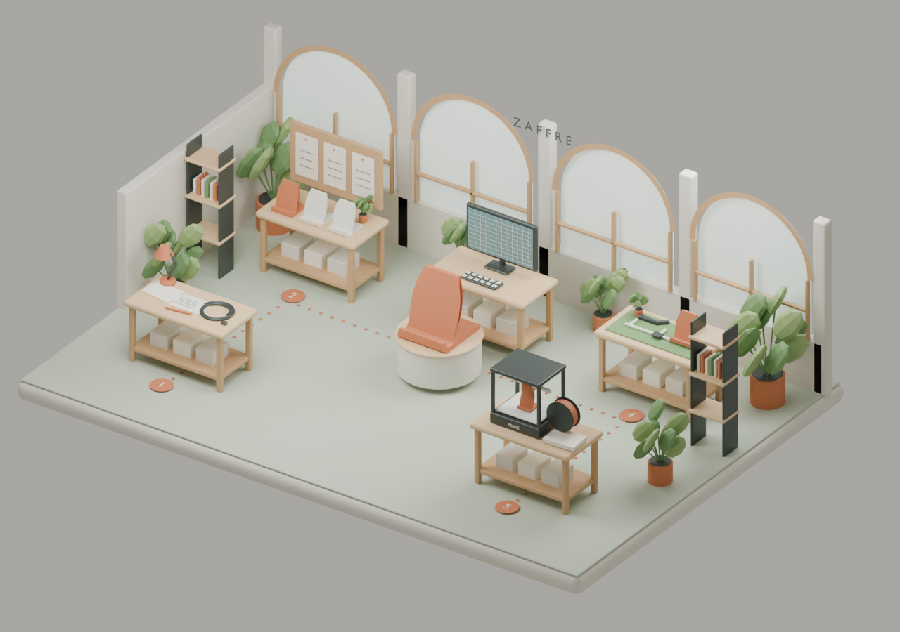

An editable model
A small Fusion design you can adjust, revisit, and make your own.
Learn to turn an everyday problem into an editable 3D model—with AI as your collaborator.

A small Fusion design you can adjust, revisit, and make your own.
A mesh file, checked for scale, ready for the next step in a slicer.
Brief, model, check, revise. A practical way to approach your next idea.
A little theory.
A lot of making.
One achievable project. Seven clear checkpoints. Open a step to see what you’ll do.
Read the learner workbook →Choose an ordinary desk problem. Name who it affects, measure one relevant dimension, and define what a useful result would do.
Checkpoint: a one-sentence brief with one constraint.
Learn how AI suggestions differ from evidence. Use a goal, context, constraints, and questions to improve your brief. Correct or label an unverified suggestion.
Checkpoint: you can explain what you know and what still needs checking.
Brain-dump a phone-holder idea, then sketch its silhouette and annotate its dimensions. See how Krea or Vizcom can help explore appearance in an optional instructor demonstration.
Checkpoint: one selected direction. An attractive image is a reference, not measured CAD.
Create a closed, dimensioned side profile. Extrude it into a phone cradle, then refine the outline. Save a model with editable history.
Checkpoint: one solid body and a saved design. Extra styling is optional.
Change a driving dimension for your own phone and case. Inspect the new size, the remaining material, and the timeline. Explain why you made the change.
Checkpoint: a measured revision and one physical test still to perform.
Save your native design and export STL or 3MF. Reopen the export in a viewer or slicer and confirm its scale. Add a screenshot and a short README.
Checkpoint: editable source, usable export, and a clear next action.
Share a revision with a partner. Choose one simple project to try independently tomorrow. Meet three optional ways Zaffre can help when your next project needs more support.
Checkpoint: explain one decision and one untested assumption.
AI helps organize and develop the work. You set the constraints and verify the result.
Watch a workflow example ↗Concept tools → CAD → prototype preparation → documentation and media. This is the public overview; internal prompts, automation, and orchestration remain private.
Three optional services for the project after your first project.
Turn a rough idea into a focused visual direction.
ExploreDevelop a defined part or small assembly into editable CAD.
ExploreTurn existing CAD into drawings and clear assembly instructions.
ExploreOptional, separately scoped work. No purchase is required to complete the workshop.
Set up your accounts before the session. Use software licenses appropriate to your use. A ruler, paper, and a small everyday problem complete the kit.
No prior CAD knowledge is assumed. You should be comfortable using a mouse and saving files. Fusion must be installed and signed in before the session; the workbook includes a setup check.
You’ll have a foundation for your next simple project, not mastery of every product or manufacturing method. The goal is to create, revise, and export one small design independently. Fit and physical performance still need testing.
You practice with an AI chat tool and Autodesk Fusion. Krea or Vizcom, Bambu Studio, Fusion Drawings, Illustrator, InDesign, and Premiere appear as examples of the wider workflow. You do not need to buy or learn them all for this session.
The stages, decisions, outputs, and general beginner skills. Zaffre’s internal prompts, application automation, and orchestration are not distributed. Public page code and learner materials are intentionally shareable.
No date, price, or seat is confirmed on this page. The inquiry builder downloads a text brief for you to send to your organizer. It does not submit data, reserve a place, or take payment.